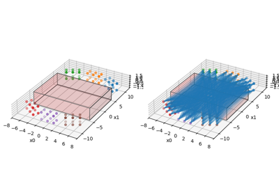

Note
Go to the end to download the full example code.
pytorch parallelproj projection layer
In this example, we show how to define a custom pytorch layer that can be used
to define a feed forward neural network that includes a parallelproj forward and back
backward projections (or any LinearOperator) that can be used with pytorch’s
autograd engine.
16 from __future__ import annotations
17
18 import array_api_compat.torch as torch
19 import matplotlib.pyplot as plt
20 import parallelproj
21 from array_api_compat import device
22
23
24 # device variable (cpu or cuda) that determines whether calculations
25 # are performed on the cpu or cuda gpu
26 if parallelproj.cuda_present:
27 dev = "cuda"
28 else:
29 dev = "cpu"
Setup the forward projection layer
We subclass torch.autograd.Function to define a custom pytorch layer
that is compatible with pytorch’s autograd engine.
see also: https://pytorch.org/tutorials/beginner/examples_autograd/two_layer_net_custom_function.html
40 class LinearSingleChannelOperator(torch.autograd.Function):
41 """
42 Function representing a linear operator acting on a mini batch of single channel images
43 """
44
45 @staticmethod
46 def forward(
47 ctx, x: torch.Tensor, operator: parallelproj.LinearOperator
48 ) -> torch.Tensor:
49 """forward pass of the linear operator
50
51 Parameters
52 ----------
53 ctx : context object
54 that can be used to store information for the backward pass
55 x : torch.Tensor
56 mini batch of 3D images with dimension (batch_size, 1, num_voxels_x, num_voxels_y, num_voxels_z)
57 operator : parallelproj.LinearOperator
58 linear operator that can act on a single 3D image
59
60 Returns
61 -------
62 torch.Tensor
63 mini batch of 3D images with dimension (batch_size, opertor.out_shape)
64 """
65
66 # https://pytorch.org/docs/stable/notes/extending.html#how-to-use
67 ctx.set_materialize_grads(False)
68 ctx.operator = operator
69
70 batch_size = x.shape[0]
71 y = torch.zeros(
72 (batch_size,) + operator.out_shape, dtype=x.dtype, device=device(x)
73 )
74
75 # loop over all samples in the batch and apply linear operator
76 # to the first channel
77 for i in range(batch_size):
78 y[i, ...] = operator(x[i, 0, ...].detach())
79
80 return y
81
82 @staticmethod
83 def backward(ctx, grad_output: torch.Tensor) -> tuple[torch.Tensor, None]:
84 """backward pass of the forward pass
85
86 Parameters
87 ----------
88 ctx : context object
89 that can be used to obtain information from the forward pass
90 grad_output : torch.Tensor
91 mini batch of dimension (batch_size, operator.out_shape)
92
93 Returns
94 -------
95 torch.Tensor, None
96 mini batch of 3D images with dimension (batch_size, 1, opertor.in_shape)
97 """
98
99 # For details on how to implement the backward pass, see
100 # https://pytorch.org/docs/stable/notes/extending.html#how-to-use
101
102 # since forward takes two input arguments (x, operator)
103 # we have to return two arguments (the latter is None)
104 if grad_output is None:
105 return None, None
106 else:
107 operator = ctx.operator
108
109 batch_size = grad_output.shape[0]
110 x = torch.zeros(
111 (batch_size, 1) + operator.in_shape,
112 dtype=grad_output.dtype,
113 device=device(grad_output),
114 )
115
116 # loop over all samples in the batch and apply linear operator
117 # to the first channel
118 for i in range(batch_size):
119 x[i, 0, ...] = operator.adjoint(grad_output[i, ...].detach())
120
121 return x, None
Setup the back projection layer
We subclass torch.autograd.Function to define a custom pytorch layer
that is compatible with pytorch’s autograd engine.
see also: https://pytorch.org/tutorials/beginner/examples_autograd/two_layer_net_custom_function.html
133 class AdjointLinearSingleChannelOperator(torch.autograd.Function):
134 """
135 Function representing the adjoint of a linear operator acting on a mini batch of single channel images
136 """
137
138 @staticmethod
139 def forward(
140 ctx, x: torch.Tensor, operator: parallelproj.LinearOperator
141 ) -> torch.Tensor:
142 """forward pass of the adjoint of the linear operator
143
144 Parameters
145 ----------
146 ctx : context object
147 that can be used to store information for the backward pass
148 x : torch.Tensor
149 mini batch of 3D images with dimension (batch_size, 1, operator.out_shape)
150 operator : parallelproj.LinearOperator
151 linear operator that can act on a single 3D image
152
153 Returns
154 -------
155 torch.Tensor
156 mini batch of 3D images with dimension (batch_size, 1, opertor.in_shape)
157 """
158
159 ctx.set_materialize_grads(False)
160 ctx.operator = operator
161
162 batch_size = x.shape[0]
163 y = torch.zeros(
164 (batch_size, 1) + operator.in_shape, dtype=x.dtype, device=device(x)
165 )
166
167 # loop over all samples in the batch and apply linear operator
168 # to the first channel
169 for i in range(batch_size):
170 y[i, 0, ...] = operator.adjoint(x[i, ...].detach())
171
172 return y
173
174 @staticmethod
175 def backward(ctx, grad_output):
176 """backward pass of the forward pass
177
178 Parameters
179 ----------
180 ctx : context object
181 that can be used to obtain information from the forward pass
182 grad_output : torch.Tensor
183 mini batch of dimension (batch_size, 1, operator.in_shape)
184
185 Returns
186 -------
187 torch.Tensor, None
188 mini batch of 3D images with dimension (batch_size, 1, opertor.out_shape)
189 """
190
191 # For details on how to implement the backward pass, see
192 # https://pytorch.org/docs/stable/notes/extending.html#how-to-use
193
194 # since forward takes two input arguments (x, operator)
195 # we have to return two arguments (the latter is None)
196 if grad_output is None:
197 return None, None
198 else:
199 operator = ctx.operator
200
201 batch_size = grad_output.shape[0]
202 x = torch.zeros(
203 (batch_size,) + operator.out_shape,
204 dtype=grad_output.dtype,
205 device=device(grad_output),
206 )
207
208 # loop over all samples in the batch and apply linear operator
209 # to the first channel
210 for i in range(batch_size):
211 x[i, ...] = operator(grad_output[i, 0, ...].detach())
212
213 return x, None
Setup a minimal non-TOF PET projector
We setup a minimal non-TOF PET projector of small scanner with three rings.
223 num_rings = 3
224 scanner = parallelproj.RegularPolygonPETScannerGeometry(
225 torch,
226 dev,
227 radius=35.0,
228 num_sides=12,
229 num_lor_endpoints_per_side=6,
230 lor_spacing=3.0,
231 ring_positions=torch.linspace(-4, 4, num_rings),
232 symmetry_axis=1,
233 )
234
235 # setup the LOR descriptor that defines the sinogram
236 lor_desc = parallelproj.RegularPolygonPETLORDescriptor(
237 scanner,
238 radial_trim=10,
239 max_ring_difference=1,
240 sinogram_order=parallelproj.SinogramSpatialAxisOrder.RVP,
241 )
242
243 proj = parallelproj.RegularPolygonPETProjector(
244 lor_desc, img_shape=(20, 5, 20), voxel_size=(2.0, 2.0, 2.0)
245 )
Define a mini batch of input and output tensors
251 batch_size = 2
252
253 x = torch.rand(
254 (batch_size, 1) + proj.in_shape,
255 device=dev,
256 dtype=torch.float32,
257 requires_grad=True,
258 )
259
260 y = torch.rand(
261 (batch_size,) + proj.out_shape,
262 device=dev,
263 dtype=torch.float32,
264 requires_grad=True,
265 )
Define the forward and backward projection layers
271 fwd_op_layer = LinearSingleChannelOperator.apply
272 adjoint_op_layer = AdjointLinearSingleChannelOperator.apply
273
274 f1 = fwd_op_layer(x, proj)
275 print("forward projection (Ax) .:", f1.shape, type(f1), device(f1))
276
277 b1 = adjoint_op_layer(y, proj)
278 print("back projection (A^T y) .:", b1.shape, type(b1), device(b1))
279
280 fb1 = adjoint_op_layer(fwd_op_layer(x, proj), proj)
281 print("back + forward projection (A^TAx) .:", fb1.shape, type(fb1), device(fb1))
forward projection (Ax) .: torch.Size([2, 53, 36, 7]) <class 'torch.Tensor'> cpu
back projection (A^T y) .: torch.Size([2, 1, 20, 5, 20]) <class 'torch.Tensor'> cpu
back + forward projection (A^TAx) .: torch.Size([2, 1, 20, 5, 20]) <class 'torch.Tensor'> cpu
Define a dummy loss function and trigger the backpropagation
288 # define a dummy loss function
289 dummy_loss = (fb1**2).sum()
290 # trigger the backpropagation
291 dummy_loss.backward()
292
293 print(f" backpropagted gradient {x.grad}")
backpropagted gradient tensor([[[[[20086394.0000, 21926572.0000, 23085238.0000, ...,
22902458.0000, 21764806.0000, 20014442.0000],
[ 7569478.5000, 9866057.0000, 12338519.0000, ...,
12369382.0000, 9966265.0000, 7620653.5000],
[32247646.0000, 34635652.0000, 35901980.0000, ...,
36398936.0000, 35147836.0000, 32675298.0000],
[ 7414631.5000, 9602699.0000, 11943713.0000, ...,
12227935.0000, 9873562.0000, 7572415.0000],
[19615540.0000, 21298336.0000, 22365974.0000, ...,
23061226.0000, 21965030.0000, 20217630.0000]],
[[21819120.0000, 23332588.0000, 24320732.0000, ...,
24104318.0000, 23190546.0000, 21785262.0000],
[ 9875263.0000, 12816117.0000, 15461813.0000, ...,
15572411.0000, 12912116.0000, 9937282.0000],
[34590812.0000, 36497968.0000, 37429088.0000, ...,
37969600.0000, 37133384.0000, 35181352.0000],
[ 9624960.0000, 12411884.0000, 14912495.0000, ...,
15410238.0000, 12798262.0000, 9857678.0000],
[21289456.0000, 22707834.0000, 23565552.0000, ...,
24350688.0000, 23492546.0000, 22030238.0000]],
[[22943792.0000, 24192888.0000, 24948796.0000, ...,
24845524.0000, 24166840.0000, 22933024.0000],
[12268475.0000, 15459006.0000, 18429674.0000, ...,
18595072.0000, 15581523.0000, 12418219.0000],
[35876808.0000, 37385308.0000, 37962656.0000, ...,
38596720.0000, 38103316.0000, 36475608.0000],
[11900245.0000, 14953430.0000, 17856332.0000, ...,
18401430.0000, 15437290.0000, 12304358.0000],
[22376748.0000, 23570298.0000, 24250626.0000, ...,
25083946.0000, 24450084.0000, 23173374.0000]],
...,
[[23617192.0000, 24935822.0000, 25629746.0000, ...,
25763646.0000, 25065206.0000, 23749154.0000],
[12555168.0000, 15688098.0000, 18678316.0000, ...,
18718670.0000, 15745906.0000, 12526055.0000],
[36409736.0000, 37974408.0000, 38411408.0000, ...,
38265588.0000, 37708200.0000, 36221128.0000],
[12152745.0000, 15181724.0000, 18019566.0000, ...,
17971658.0000, 15173922.0000, 12138804.0000],
[22629768.0000, 23874340.0000, 24519744.0000, ...,
24797526.0000, 24136172.0000, 22907292.0000]],
[[22483866.0000, 24008486.0000, 24886252.0000, ...,
25087682.0000, 24179106.0000, 22624332.0000],
[10090252.0000, 13076145.0000, 15699825.0000, ...,
15713575.0000, 13078269.0000, 10106700.0000],
[35212752.0000, 37095420.0000, 37868496.0000, ...,
37733732.0000, 36866232.0000, 34943740.0000],
[ 9769351.0000, 12652193.0000, 15175870.0000, ...,
15105841.0000, 12653903.0000, 9815279.0000],
[21524784.0000, 22940318.0000, 23778752.0000, ...,
24078912.0000, 23223564.0000, 21740676.0000]],
[[20651046.0000, 22463122.0000, 23584686.0000, ...,
23721222.0000, 22611378.0000, 20774850.0000],
[ 7740683.0000, 10109845.0000, 12510752.0000, ...,
12547491.0000, 10072335.0000, 7738669.5000],
[32730210.0000, 35136596.0000, 36362596.0000, ...,
36189788.0000, 34989544.0000, 32583986.0000],
[ 7504328.5000, 9789155.0000, 12103698.0000, ...,
12134880.0000, 9787575.0000, 7532804.0000],
[19762226.0000, 21470056.0000, 22564222.0000, ...,
22781402.0000, 21749238.0000, 20015638.0000]]]],
[[[[20290034.0000, 22093986.0000, 23254730.0000, ...,
23286042.0000, 22084120.0000, 20273634.0000],
[ 7484071.5000, 9731946.0000, 12104756.0000, ...,
12169522.0000, 9817365.0000, 7532969.0000],
[32583828.0000, 35001604.0000, 36201268.0000, ...,
36336212.0000, 35063064.0000, 32652470.0000],
[ 7606922.0000, 9896147.0000, 12336282.0000, ...,
12530537.0000, 10109724.0000, 7727185.0000],
[20114310.0000, 21904264.0000, 23043310.0000, ...,
23381836.0000, 22269254.0000, 20492984.0000]],
[[22053846.0000, 23562330.0000, 24518784.0000, ...,
24531318.0000, 23542084.0000, 22024266.0000],
[ 9758123.0000, 12598578.0000, 15086953.0000, ...,
15305746.0000, 12690255.0000, 9782751.0000],
[34997844.0000, 36918332.0000, 37793744.0000, ...,
37864004.0000, 36996988.0000, 35100736.0000],
[ 9919393.0000, 12837128.0000, 15444376.0000, ...,
15777391.0000, 13107793.0000, 10093270.0000],
[21861082.0000, 23326464.0000, 24289382.0000, ...,
24655834.0000, 23789972.0000, 22293944.0000]],
[[23187212.0000, 24465234.0000, 25206738.0000, ...,
25187294.0000, 24432078.0000, 23113012.0000],
[12065427.0000, 15117595.0000, 17921884.0000, ...,
18232354.0000, 15261734.0000, 12185692.0000],
[36257804.0000, 37774808.0000, 38341036.0000, ...,
38371168.0000, 37862948.0000, 36341372.0000],
[12295795.0000, 15457615.0000, 18430002.0000, ...,
18713446.0000, 15755239.0000, 12590562.0000],
[22998970.0000, 24218062.0000, 24965822.0000, ...,
25330580.0000, 24693966.0000, 23441024.0000]],
...,
[[23326366.0000, 24668374.0000, 25360364.0000, ...,
25190904.0000, 24545796.0000, 23274312.0000],
[12352026.0000, 15469704.0000, 18419766.0000, ...,
18665536.0000, 15651927.0000, 12396338.0000],
[36682108.0000, 38303044.0000, 38804608.0000, ...,
38610288.0000, 37968012.0000, 36446448.0000],
[12244776.0000, 15297133.0000, 18284904.0000, ...,
18665106.0000, 15633315.0000, 12402522.0000],
[23160140.0000, 24475034.0000, 25274452.0000, ...,
25755722.0000, 25030838.0000, 23710170.0000]],
[[22248820.0000, 23787886.0000, 24685008.0000, ...,
24507084.0000, 23633664.0000, 22104954.0000],
[ 9935805.0000, 12882927.0000, 15480850.0000, ...,
15618077.0000, 12935939.0000, 9956006.0000],
[35392696.0000, 37337828.0000, 38177280.0000, ...,
38007516.0000, 36967768.0000, 35026624.0000],
[ 9844427.0000, 12741593.0000, 15335177.0000, ...,
15579333.0000, 12910286.0000, 9969947.0000],
[22063586.0000, 23580128.0000, 24555184.0000, ...,
25002614.0000, 24017698.0000, 22489106.0000]],
[[20462902.0000, 22281652.0000, 23394642.0000, ...,
23174126.0000, 22106686.0000, 20308700.0000],
[ 7637548.5000, 9968208.0000, 12327412.0000, ...,
12410762.0000, 9928240.0000, 7613791.5000],
[32906870.0000, 35305092.0000, 36586940.0000, ...,
36426472.0000, 35077048.0000, 32594900.0000],
[ 7591776.5000, 9871862.0000, 12215113.0000, ...,
12407643.0000, 9933206.0000, 7625594.0000],
[20314572.0000, 22082012.0000, 23290000.0000, ...,
23629972.0000, 22462728.0000, 20607566.0000]]]]])
Check whether the gradients are calculated correctly
We use pytorch’s gradcheck function to check whether the implementation of the backward pass, needed to calculate the gradients, is correct.
This test can be slow which is why we only execute it on the gpu. Note that parallelproj’s projectors use single precision precision which is why we have to use a larger atol and rtol.
307 if dev == "cpu":
308 print("skipping (slow) gradient checks on cpu")
309 else:
310 print("Running forward projection layer gradient test")
311 grad_test_fwd = torch.autograd.gradcheck(
312 fwd_op_layer, (x, proj), eps=1e-1, atol=1e-3, rtol=1e-3
313 )
314
315 print("Running adjoint projection layer gradient test")
316 grad_test_fwd = torch.autograd.gradcheck(
317 adjoint_op_layer, (y, proj), eps=1e-1, atol=1e-3, rtol=1e-3
318 )
skipping (slow) gradient checks on cpu
Visualize the scanner geometry and image FOV
324 fig = plt.figure(figsize=(10, 10))
325 ax = fig.add_subplot(111, projection="3d")
326 proj.show_geometry(ax)
327 fig.tight_layout()
328 fig.show()

Total running time of the script: (0 minutes 0.193 seconds)
Related examples



Non-TOF and TOF projections using a modularized (block) PET scanner geometry